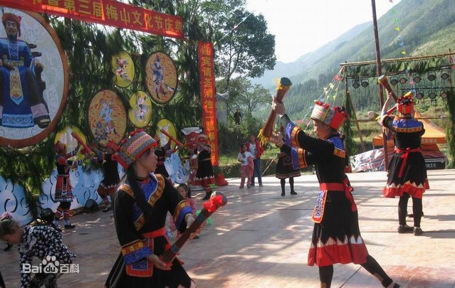

连南瑶族自治县的排瑶“耍歌堂”
“耍歌堂”是连南瑶族自治县的排瑶以祭祖和欢庆丰收为主要内容的宗教节日。旧俗每隔三年、五年或八年， 以排为单位在农历十月十六日前后举行“耍歌堂”活动。节日前，于农历七月七日各排老人商定活动事宜， 活动时间三至七天。
封开《五马巡城》
封开县大洲镇，位于县境内的贺江之畔，山环水绕，绿树蓝天， 世世代代生活在这里的大洲人民深受天地灵气的薰陶，民风淳厚质朴，善歌善舞。每逢春节期间， 古老质朴的民间舞蹈《麒麟白马舞》、《五马巡城》、《春牛舞》山歌对唱等便舞遍大洲镇的乡间田垄， 唱遍了农家里巷，使整个大洲镇沉浸在热烈、喜庆、祥和的节日气氛之中，一直延至元宵节之后。
龙舟竞渡
龙舟竞渡，又称赛龙舟、划龙船、龙船赛会等， 是一种具有浓郁的传统民俗文化色彩的群众性娱乐活动，同时也是一种有利于增强人民体质， 培养勇往直前、坚毅果敢精神的体育运动.
龙门—舞火狗

龙门县北部的蓝田瑶族乡，世袭相沿而盛行一种“舞火狗”（又叫舞火龙）的习俗。每年农历八月十五日， 以村寨为单位，举行“舞火狗”活动。
阳江风筝
阳江是南国风筝之乡，阳江风筝有着1400年的历史。阳江人扎制的风筝造型美观，技术精巧，形神兼备， 栩栩如生。阳江背山面海，旷野辽阔，到处都是天然的放飞场。每逢九•九重阳，秋高气爽， 正是纸鹞放飞的最佳时节，放风筝便成了民间最兴盛的赛事。
高州木偶戏
高州木偶戏：又名鬼仔戏，是高州民间艺人不断吸收、改造、发展而形成的一个新剧种。 由一名艺人表演，集唱、做、吹、打于一身。
盘王节
盘王节”是过山瑶重要节日，俗称“还盘王愿”。菜坑的过山瑶于农历三月三日择日， 一般选择农历十月十六日以后的吉日过盘王节，共活动三日两夜，每家捐大米6斤、黄豆2斤、香资钱4元左右， 每人捐猪肉2斤，由推选出来的“总理”综理一切节日事务。
潮州工夫茶
潮州工夫茶，有广义与狭义两种说法。广义上说，工夫茶指以乌龙茶类为冲泡茶种；狭义上说， 指讲究水、火、茶叶、茶具、冲法和品尝的茶艺。从“茶道”上考究，潮州有一套独特的小巧工夫茶具， 讲究“高冲低洒”、“刮沫淋盖”、“关公巡城”、“韩信点兵”等一套冲泡手艺和谦恭礼让的茶礼。但这还是小工夫， 大工夫则指那些除此以外的更加讲究的包含有哲理、宗教、思想修养和文学艺术等丰富内涵的茶道。
潮州菜
潮州菜发源于韩江平原，历经千余年的形成和发展，以其独特风味而自成一体。唐代后期至明初， 潮州人有采用生猛海鲜烹饪的习惯，史书对当时潮菜的烹调技术和餐饮器皿有所记载。明末清初， 潮州日渐繁荣。在这个社会条件下，潮州菜得以在当地居民烹调的基础上， 融合吸收了外地乃至海外的饮食文化，逐渐形成一种地方菜系。